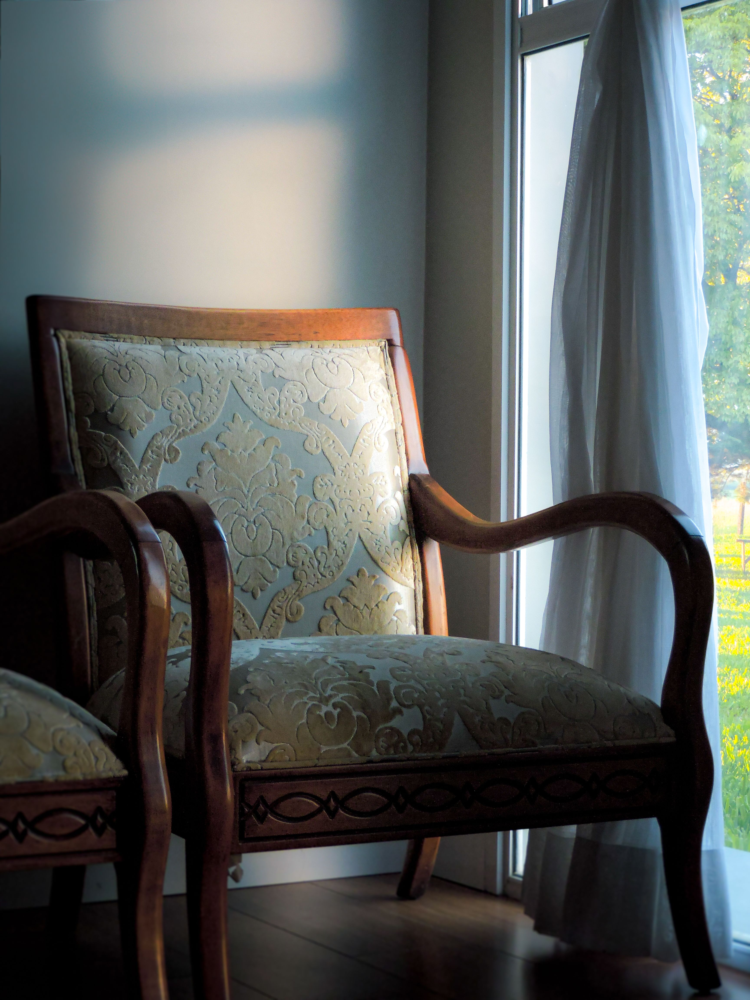

En este artículo
Introducción
Organiza y prepara tu casa para recibir visitas sin estrés, priorizando entrada, baño, zonas comunes, limpieza esencial y pequeños detalles de comodidad.
Una buena preparación evita decisiones impulsivas y permite concentrar el esfuerzo donde realmente aporta resultados. Antes de comprar productos, retirar plantas o reorganizar un espacio, conviene observar las condiciones existentes y definir un objetivo concreto.
Esta guía desarrolla un proceso práctico, pensado para aplicar por etapas. Las recomendaciones generales deben adaptarse al clima, a la especie vegetal, al tipo de vivienda y a las instrucciones de fabricantes cuando intervienen herramientas, equipos o productos.
Cuando una tarea implica ramas grandes, instalaciones eléctricas, trabajos en altura, estructuras, productos peligrosos o una situación que no puedes evaluar con seguridad, recurre a un profesional cualificado.
Define prioridades en lugar de intentar limpiar toda la casa
Recibir visitas no exige transformar la vivienda en un espacio de exposición. La preparación resulta mucho más sencilla cuando te concentras en las zonas que realmente utilizarán los invitados: entrada, sala, comedor, baño y, cuando corresponda, habitación de huéspedes.
Empieza recogiendo objetos fuera de lugar. Devuelve cada cosa a su sitio en vez de esconder todo dentro de un armario, porque esa solución suele crear un segundo problema. Si tienes poco tiempo, utiliza una cesta temporal para reunir objetos que pertenecen a otras habitaciones y distribúyelos al terminar.
Después limpia superficies de contacto y zonas visibles. Quitar polvo, aspirar o barrer y limpiar el suelo donde sea necesario produce un cambio mayor que dedicar una hora a organizar un cajón que nadie utilizará.
Revisa iluminación y ventilación. Abre ventanas cuando las condiciones lo permitan y asegúrate de que las lámparas principales funcionen. Una casa con aire renovado y luz agradable se siente cuidada incluso sin una decoración especial.
Controla olores desde la causa. Vacía basura, limpia el fregadero y revisa textiles húmedos. Los ambientadores intensos no sustituyen limpieza y pueden resultar molestos para personas sensibles.
Si hay niños o mascotas, piensa en circulación y seguridad. Retira objetos frágiles de zonas de paso, recoge cables y decide con antelación cómo gestionarás a las mascotas si alguno de los invitados no se siente cómodo con ellas.
Reserva los últimos minutos para ti. Una preparación realista debe permitirte recibir a las personas con tranquilidad, no agotado por intentar perfeccionar cada rincón.
Cómo convertir la observación en un plan
Trabaja de forma gradual y vuelve a observar el resultado antes de realizar el siguiente cambio. Esta pausa permite corregir decisiones, evitar intervenciones excesivas y adaptar el trabajo a las condiciones reales del espacio, la planta o la vivienda.
Prepara la entrada y las zonas donde estarán los invitados
La entrada crea la primera impresión y necesita sobre todo espacio para pasar. Retira zapatos, bolsas o paquetes que bloqueen el recorrido y deja un lugar donde los visitantes puedan colocar abrigo, paraguas o bolso si es necesario.
En la sala, despeja asientos. Cojines y mantas pueden aportar comodidad, pero no deberían ocupar todas las plazas. Comprueba que haya suficientes lugares para sentarse sin tener que mover muebles cuando lleguen los invitados.

Una mesa auxiliar libre resulta útil para vasos, teléfonos o pequeños objetos. Si todas las superficies están llenas de decoración, retira temporalmente algunas piezas para que el espacio pueda utilizarse.
Si habrá comida o bebidas, planifica el recorrido entre cocina y comedor. Guarda objetos que estrechen el paso y evita colocar cables o extensiones en zonas de circulación.
La temperatura también influye en el confort. Ajusta calefacción, ventilación o aire acondicionado con antelación dentro de un rango razonable y ten en cuenta que varias personas juntas pueden elevar la temperatura de una habitación.
Prepara agua y los elementos básicos antes de que lleguen. No es necesario montar una mesa elaborada; disponer de vasos limpios y una opción sencilla evita abandonar la conversación para buscar cosas.
Si esperas niños, revisa objetos frágiles, plantas tóxicas y elementos pequeños al alcance. Adapta el espacio a la edad de los visitantes en lugar de confiar únicamente en pedir que no toquen.
Aplicación práctica paso a paso
Trabaja de forma gradual y vuelve a observar el resultado antes de realizar el siguiente cambio. Esta pausa permite corregir decisiones, evitar intervenciones excesivas y adaptar el trabajo a las condiciones reales del espacio, la planta o la vivienda.
Deja el baño de visitas limpio y completo
El baño merece atención especial porque los invitados lo utilizarán de manera independiente. Limpia lavabo, inodoro, espejo y suelo, y comprueba que no haya objetos personales innecesarios ocupando superficies.
Coloca papel higiénico suficiente y deja una reserva visible o fácil de encontrar. También debe haber jabón para manos y una toalla limpia y seca.
Vacía la papelera si está llena y asegúrate de que tenga una bolsa adecuada. Pequeños detalles prácticos evitan que el visitante tenga que preguntar.
Comprueba que la puerta cierre correctamente y que la luz funcione. Si el baño tiene extractor, revisa su funcionamiento. La ventilación ayuda a mantener el espacio cómodo.
Guarda medicamentos, productos de higiene personal y objetos delicados en un lugar privado y seguro. Si hay niños entre las visitas, productos de limpieza y medicamentos deben quedar fuera de su alcance.
Evita llenar el baño con fragancias fuertes. Una limpieza correcta y ventilación suelen ser suficientes. Si utilizas algún aroma, elige una intensidad discreta.
Antes de que lleguen los invitados, haz una revisión rápida desde su perspectiva: ¿hay jabón, papel, una toalla seca y un lugar donde dejar temporalmente un objeto? Si la respuesta es sí, el baño está preparado.
Qué conviene revisar antes de continuar
Trabaja de forma gradual y vuelve a observar el resultado antes de realizar el siguiente cambio. Esta pausa permite corregir decisiones, evitar intervenciones excesivas y adaptar el trabajo a las condiciones reales del espacio, la planta o la vivienda.

Detalles de comodidad que no requieren gastar mucho
Una casa acogedora no depende de comprar decoración nueva. La comodidad se construye con espacio para sentarse, temperatura agradable, iluminación suficiente y la sensación de que el anfitrión ha pensado en necesidades básicas.
Si la visita se quedará a dormir, prepara ropa de cama limpia, una almohada adicional si dispones de ella y espacio para dejar equipaje. Una superficie libre y un enchufe accesible son especialmente útiles.
Indica de forma natural dónde está el baño y dónde pueden dejar sus cosas. Esto evita que los invitados tengan que preguntar por todo y les ayuda a sentirse más cómodos.
Si vas a servir comida, pregunta con antelación por alergias o restricciones alimentarias relevantes. No necesitas preparar muchas opciones, pero sí evitar situaciones incómodas o inseguras.
Ten a mano servilletas, posavasos y una pequeña solución para derrames. Resolver un accidente rápidamente evita que una mancha se convierta en preocupación durante toda la visita.
La música puede acompañar una reunión, pero mantén un volumen que permita conversar. La iluminación también puede ajustarse para que sea agradable sin dejar zonas de paso oscuras.
Cuando todo esté listo, deja de reorganizar. La finalidad de preparar la casa es facilitar el encuentro. Los invitados recordarán mucho más la atención y la conversación que una estantería perfectamente ordenada.
Mantenimiento y seguimiento
Trabaja de forma gradual y vuelve a observar el resultado antes de realizar el siguiente cambio. Esta pausa permite corregir decisiones, evitar intervenciones excesivas y adaptar el trabajo a las condiciones reales del espacio, la planta o la vivienda.
Una rutina de preparación en 60 minutos
Si dispones de una hora, utiliza los primeros quince minutos para recoger objetos fuera de lugar y despejar recorridos. Trabaja con una cesta y no te detengas a reorganizar cajones.
Dedica los siguientes quince minutos al baño: lavabo, inodoro, espejo, papel, jabón y toalla. Esta zona pequeña ofrece un resultado visible con poco tiempo.
Utiliza otros quince minutos para aspirar o barrer las zonas comunes y limpiar la mesa o superficie donde se servirán bebidas o comida. Prioriza lo que los invitados tocarán.
En los últimos quince minutos, ventila, revisa iluminación, prepara agua y despeja asientos. Después guarda productos de limpieza y deja de trabajar.
Si alguien se quedará a dormir, prepara la habitación antes de esta rutina rápida. La ropa de cama necesita estar limpia y completamente seca, y el huésped debe disponer de un espacio razonable para sus pertenencias.
Una lista reutilizable en el teléfono evita pensar desde cero cada vez. Puedes dividirla en baño, sala, cocina y huéspedes, y marcar únicamente lo que aplica a cada visita.

Con el tiempo, mantener rutinas semanales sencillas reduce todavía más la preparación. Una casa funcional requiere menos esfuerzo de última hora que una casa que solo se organiza cuando alguien va a llegar.
Cómo mantener los resultados a largo plazo
Después de completar las tareas principales, revisa el espacio durante las semanas siguientes. Los resultados reales aparecen con el uso, el crecimiento de las plantas y los cambios de clima, no únicamente al terminar el trabajo.
Anota qué funcionó y qué requirió más tiempo del previsto. Esta información permite preparar la siguiente temporada con mayor precisión y evita repetir soluciones poco prácticas.
Evita añadir nuevas tareas solo porque queda espacio en el calendario. El mantenimiento sostenible consiste en hacer lo necesario con regularidad, no en intervenir constantemente.
Si una condición cambia —una planta crece, aparece una fuga, el suelo permanece húmedo o una zona deja de funcionar— vuelve al diagnóstico antes de aplicar una solución.
Fotografías tomadas desde los mismos puntos son una herramienta sencilla para comparar. En jardines permiten ver crecimiento y estacionalidad; en el hogar muestran qué zonas vuelven a acumular objetos.
Finalmente, revisa seguridad, herramientas y accesos. Un resultado bonito o productivo nunca debe depender de una instalación inestable, un producto mal almacenado o una tarea que supera tu capacidad técnica.
Revisión práctica antes de dar el trabajo por terminado
Antes de considerar finalizada la tarea, recorre de nuevo el espacio sin herramientas en la mano. Esta segunda mirada ayuda a detectar problemas que pasan desapercibidos mientras estás concentrado en ejecutar cada paso.
Comprueba que los accesos continúen libres, que no hayas creado zonas difíciles de mantener y que los materiales retirados se hayan gestionado correctamente. El orden al terminar también forma parte de un trabajo seguro.
Observa si el resultado responde al objetivo inicial. Si comenzaste para mejorar salud, funcionamiento o comodidad, esa mejora debe poder explicarse con claridad. Si únicamente cambió la apariencia, quizá todavía exista un problema de fondo por resolver.
No realices una intervención adicional solo para que todo parezca más uniforme. En jardinería, las plantas necesitan tiempo para responder; en organización doméstica, el sistema necesita varios días de uso para demostrar si funciona.
Guarda herramientas limpias y registra productos o materiales que se hayan agotado. De esta manera, la siguiente tarea comienza con el equipo preparado y no con una compra urgente.
Una revisión breve después de una semana permite detectar ajustes pequeños antes de que se conviertan en problemas. Esta forma de trabajar reduce mantenimiento y ayuda a conservar resultados durante más tiempo.
Preguntas frecuentes
¿Qué debo limpiar primero antes de recibir visitas?
Prioriza entrada, sala o comedor, baño y las superficies que realmente utilizarán los invitados.
¿Cómo preparar la casa si tengo poco tiempo?
Recoge objetos fuera de lugar, limpia baño y superficies principales, ventila y despeja asientos y recorridos.
¿Qué no puede faltar en el baño?
Papel higiénico, jabón, una toalla limpia, papelera y buena iluminación.
¿Necesito comprar decoración para recibir visitas?
No. Orden, limpieza esencial, iluminación y comodidad son más importantes que añadir objetos decorativos.
¿Qué preparar si alguien se queda a dormir?
Ropa de cama limpia, espacio para equipaje, iluminación, una superficie libre y acceso práctico a un enchufe.
Conclusión
Cómo preparar la casa para recibir visitas de forma sencilla resulta mucho más sencillo cuando el trabajo se divide en prioridades claras y se evita intervenir por costumbre.
Empieza observando, corrige primero los problemas de seguridad y después avanza con las tareas que mejoran funcionamiento, salud y mantenimiento a largo plazo.
No necesitas realizar todos los cambios en un solo día. Trabajar por etapas permite comprobar resultados y evita gastar tiempo o dinero en soluciones que no eran necesarias.
Con un pequeño registro de lo realizado y revisiones periódicas, cada temporada será más fácil de planificar y el espacio responderá mejor a las necesidades reales.